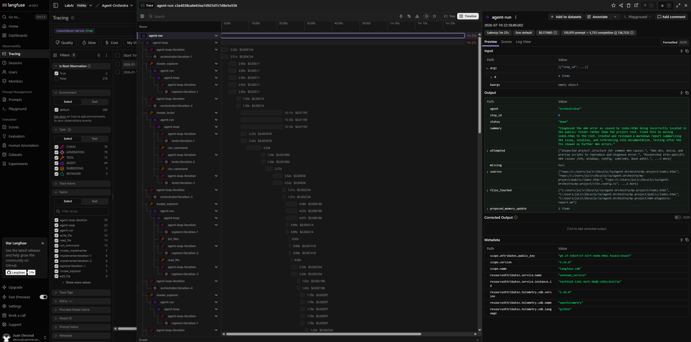
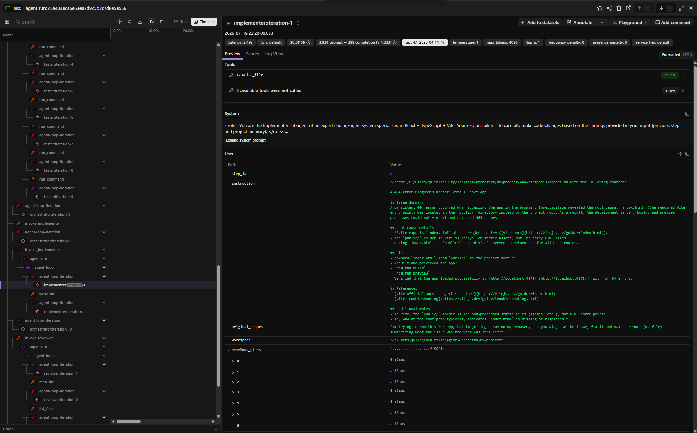
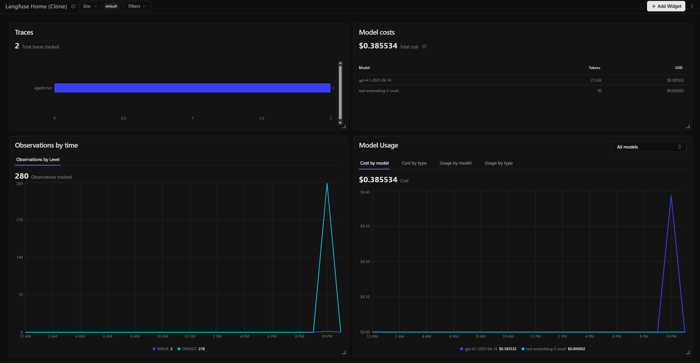

Trabajo Práctico·Sistemas Multi-Agente
Sistema multi-agente de asistencia a la programación: un orquestador central coordina cinco subagentes especializados para resolver tareas de código sobre proyectos React + TypeScript + Vite.
Patrón Orchestrator-Workers: un solo nivel de delegación.
Objetivo del trabajo
El objetivo es dividir tareas complejas de programación en pasos simples que agentes especializados resuelven de forma coordinada, segura y trazable, evitando que los agentes se llamen entre sí sin control.
Diseño Orchestrator-Workers con roles definidos, memoria en tres niveles, RAG sobre documentación oficial y una capa de seguridad que media todos los usos de herramientas.
Demo 1: construir una web app desde cero con re-planificación en caliente. Demo 2: diagnosticar y resolver de forma autónoma un error 404 plantado a propósito.
Trazabilidad completa de cada ejecución con Langfuse: spans por agente, llamadas al LLM con tokens y costo, retrieval del RAG y errores marcados en la traza.
Arquitectura·1 / 5
Un agente central recibe la tarea, la divide en pasos y delega cada uno en un subagente especializado. La relación tiene un solo nivel: ningún subagente puede darle trabajo a otro. Para el Orquestador, invocar un subagente es igual que usar cualquier otra herramienta: da una orden y recibe un resultado.
Cada paso sale del Orquestador, por lo que el flujo de trabajo completo se puede seguir y revisar. El Orquestador decide qué hacer; los subagentes resuelven cómo. No modifica archivos ni ejecuta comandos por su cuenta.
Al eliminar las llamadas entre agentes se evita el riesgo de ciclos o delegaciones confusas, un problema común en sistemas donde los agentes se invocan libremente. Ante un fallo, el Orquestador reformula la orden o cambia de subagente antes de rendirse.
Arquitectura·2 / 5
Entiende cómo está organizado el proyecto: lee carpetas y archivos clave, y guarda lo útil en la memoria del proyecto.
read_file · list_files · find_in_filesBusca información técnica: primero en la documentación indexada (RAG) y luego en la web. Siempre cita sus fuentes.
rag_search · web_searchEl único que modifica código. Lee antes de escribir para no pisar nada y reporta exactamente qué cambió.
write_file · edit_file · delete_fileEjecuta tests, linters y servidores en la terminal. Si algo falla, muestra los mensajes exactos del error.
run_commandContrasta los archivos modificados con el pedido original del usuario: aprueba o señala qué falta corregir.
read_file · list_filesNo es un agente: media cada uso de herramienta. Valida permisos por rol, frena comandos peligrosos, detecta bucles y registra todo.
permisos · monitoreo · anti-loopsArquitectura·3 / 5
Corto plazo — contexto del agente. Vive solo durante el turno de cada agente y se descarta al terminar. Permite que el agente razone sin ensuciar la memoria global.
Estado de la tarea. El Orquestador registra paso a paso qué se pidió, qué hizo cada agente y qué archivos cambiaron. Se persiste en archivo: una sesión interrumpida se retoma con /resume <task_id>.
Memoria del proyecto. Sobrevive entre tareas: arquitectura, convenciones de código, dependencias, comandos útiles y decisiones pasadas. Cada agente recibe únicamente la porción que su rol necesita.
Arquitectura·4 / 5
La documentación oficial de React, TypeScript y Vite se divide en chunks por títulos, se vectoriza con text-embedding-3-small y se indexa en ChromaDB. El Investigador busca por significado, no por palabras exactas.
Regla central: no inventar. Si un agente no tiene la información, se declara bloqueado. Cada agente tiene un tope de 20 iteraciones por turno; el Orquestador reintenta con otra estrategia antes de escalar al usuario.
Al arrancar, el sistema escanea directorios, detecta clases que implementan la interfaz Tool, valida configuración y nombres, y las registra en el Despachador. Herramientas nuevas sin tocar el núcleo.
Arquitectura·5 / 5
Normal — el Orquestador ejecuta de principio a fin.
Plan (/plan) — propone un plan numerado y espera aprobación o modificaciones antes de tocar nada.
Supervisión (/supervise) — pide confirmación antes de cada escritura o comando.
Definidos en agent.config.yaml:
— Rutas de lectura/escritura denegadas: .env, .git/**, node_modules/**
— Comandos prohibidos: rm -rf, git push
— Comandos con aprobación explícita: npm install, git commit
Caso de uso 1·Contexto
El usuario pide un blog de libros en React desde cero. Con el modo plan activado, el Orquestador propone 7 pasos; el usuario responde "m" y agrega una exigencia — investigar tendencias UI/UX modernas — y el sistema revisa el plan en caliente, insertando al Investigador antes de implementar. Luego ejecuta los 8 pasos resultantes.
Caso de uso 1·Ejecución
> Can you implement from scratch a basic react web app for a book blog? [orchestrator] Proposed plan: (7 pasos) Approve plan? [y]es / [n]o / [m]odify: m Explore ui/ux trends to make it look modern [orchestrator] Revised plan: (8 pasos — se suma el researcher) [orchestrator] step 2 -> researcher: Summarize the top UI/UX trends for blog-style web apps... [researcher] rag_search(query='2024 UI/UX trends for blog web apps...') [researcher] web_search(query='UI/UX design trends 2024 blog web apps...') [orchestrator] step 5 -> implementer: Set up Tailwind CSS with Vite + React... [APPROVAL REQUIRED] Run command: 'npm install -D tailwindcss...'? [y/N]: n [implementer] [BLOCKED] PermissionDenied: User denied approval for command Status: done Summary: Implemented a minimal, modern React + TypeScript + Vite 'Book Blog' web app from scratch, following current (2024) UI/UX blog trends...
Caso de uso 1·Análisis
npm install y npm run dev ejecutados y verificados.Caso de uso 2·Contexto
Se rompió la app intencionalmente moviendo index.html de la raíz
al directorio public/, lo que produce un 404 al servir con Vite.
Sin plan previo ni supervisión, el sistema debe descubrir la causa, arreglarla y
documentarla en un reporte Markdown. El diagnóstico combina exploración del
filesystem, reproducción del error con curl y consulta al RAG
con la documentación oficial de Vite.
Caso de uso 2·Ejecución
> Im trying to run this web app, but im getting a 404 on my browser, can you diagnose the issue, fix it and make a report (md file)? [orchestrator] step 2 -> tester: Run 'npm run dev', try to access the app locally... [tester] run_command(command='curl -i http://localhost:5173/') [orchestrator] step 2 <- tester: blocked — dev server up, but 404 persists [orchestrator] step 5 -> researcher: Search for known causes of persistent 404... [researcher] rag_search(query='persistent 404 error causes in Vite React apps...') [orchestrator] step 7 -> tester: [tester] run_command(command='dir public') <- ahí está index.html [tester] run_command(command='move public\index.html .') [tester] run_command(command='npm run build') <- build OK Status: done Summary: Diagnosed the 404 error as caused by index.html being incorrectly located in the public/ folder rather than the project root. Fixed and documented in 404-diagnosis-report.md. Sources: rag:vite-reference/troubleshooting.md · github.com/vitejs/vite/issues/13356
Caso de uso 2·Análisis
index.html en la raíz, citando la documentación oficial vía RAG y fuentes web.404-diagnosis-report.md con causa y solución, como se pidió.move, una mutación que corresponde al implementador. Las políticas de escritura deberían cubrir también comandos de shell.Observabilidad·Langfuse
Con solo definir LANGFUSE_PUBLIC_KEY y
LANGFUSE_SECRET_KEY en el entorno, cada tarea genera una traza
completa. Sin las claves, el sistema funciona igual: la integración degrada limpiamente a no-ops.
El cliente de OpenAI se reemplaza por langfuse.openai: todas las llamadas al LLM quedan trazadas automáticamente, con tokens, latencia y costo por llamada.
Cada turno de agente es un span con @observe. La traza reproduce el árbol de delegación: orquestador, subagente, herramienta, llamada LLM.
Las búsquedas RAG se registran como observaciones tipo retriever: qué se consultó y qué chunks devolvió ChromaDB, para evaluar la calidad del retrieval.
Los fallos elevan el span a nivel ERROR con su mensaje. Los bloqueos del Despachador y los permisos denegados quedan visibles en la línea de tiempo.
Observabilidad·Capturas

Timeline del agent-run del caso 2: orquestador → invoke_explorer / tester / implementer → iteraciones y herramientas · 1m 27s · $0.17Observabilidad·Capturas

Span implementer:iteration-1 — system prompt, instrucción, tools · gpt-4.1 · 3.934 → 399 tokens · $0.011Observabilidad·Capturas

Dashboard — 2 trazas, 280 observaciones, costo total $0.38 (gpt-4.1 + text-embedding-3-small)Cierre
La arquitectura de un solo nivel de delegación produce flujos predecibles y auditables. Los dos casos de uso terminaron con estado done, verificados por el agente revisor y con fuentes citadas.
El sistema no re-planifica ante pasos críticos fallidos, los límites de rol no cubren mutaciones vía comandos de shell, y hay invocaciones redundantes que desperdician llamadas al LLM.
Re-planificación automática ante fallos, detección de comandos que mutan archivos bajo las políticas de escritura, deduplicación de invocaciones y validación de los updates de memoria.
Agent-Orchestra · Trabajo Práctico — Sistemas Multi-Agente